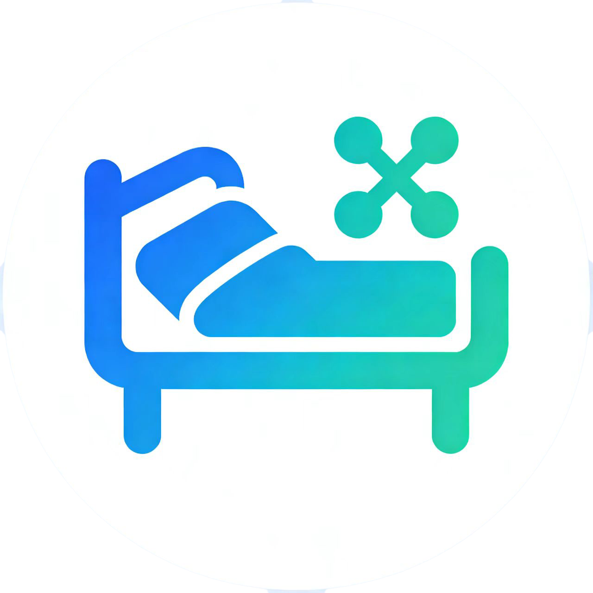

面向医院场景的共享陪护床软硬件一体化解决方案
项目状态：v0.1 | 技术栈：Spring Boot 3 + Vue 3 + ESP32 + MQTT + MySQL

随着我国人口老龄化进程加快，住院陪护需求日益增长。医院传统的陪护床租赁管理方式存在流程繁琐、设备监管困难、计费不透明等痛点。本系统针对上述问题，基于物联网技术，构建了一套涵盖**硬件终端（ESP32 智能锁控）、云服务端（Spring Boot）、前端管理面板（Vue）**的完整闭环方案，实现了陪护床从注册、租借、计费、归还到维修的全链路智能化管理。
图2 系统总体框图
系统采用四层架构设计：
devices/{code}/heartbeat 承载设备状态，下行主题 devices/{code}/command 投递控制指令。图3 模块关系图
硬件系统以 ESP32 为核心控制器，外围电路包括电磁锁驱动模块、OLED 显示模块、电源管理模块及状态检测模块。各模块之间通过 GPIO、I2C、ADC 等接口互联。
图4 硬件架构框图
采用 ESP32 DevKit 系列模组，内置 Tensilica Xtensa LX6 双核处理器，主频 240 MHz，集成 520 KB SRAM 和 4 MB Flash，支持 802.11 b/g/n WiFi 和蓝牙双模通信。作为系统核心，负责 MQTT 协议栈运行、锁控逻辑执行、OLED 显示驱动及外设管理。
关键引脚说明：
| 引脚 | 功能 | 信号方向 |
|---|---|---|
| GPIO 4 | 电磁锁继电器控制 | 输出 |
| GPIO 34 | 锁状态检测（上拉输入，下降沿中断） | 输入 |
| GPIO 8 (SDA) | OLED I²C 数据线 | 双向 |
| GPIO 9 (SCL) | OLED I²C 时钟线 | 输出 |
| GPIO 48 | 配置按键输入 | 输入 |
图5 主控模块原理图（标注 ESP32 最小系统电路及关键 I/O 信号线）
电磁锁通过继电器与 ESP32 GPIO 4 连接。控制逻辑如下：
| 信号 | 来源 | 目标 | 说明 |
|---|---|---|---|
| LOCK_CTRL | ESP32 GPIO 4 | 继电器 IN | 高电平脉冲驱动开锁 |
| LOCK_STATE | 锁反馈 | ESP32 GPIO 34 | 读取锁实际状态 |
图6 电磁锁驱动模块原理图（标注 LOCK_CTRL 控制信号与 LOCK_STATE 反馈信号）
采用 0.96 寸 SSD1306 OLED 显示屏（128×64 像素），通过 I²C 总线与 ESP32 通信。固件中集成 U8g2 图形库，实时显示设备编号、WiFi 连接状态、MQTT 连接状态、当前时间及开锁确认信息。
| 信号 | 来源 | 目标 | 说明 |
|---|---|---|---|
| SDA | ESP32 GPIO 8 | OLED SDA | I²C 数据 |
| SCL | ESP32 GPIO 9 | OLED SCL | I²C 时钟 |
图7 OLED 显示模块原理图（标注 I²C 总线连接）
系统支持外部 DC 5V/12V 供电，通过稳压电路转换为 3.3V 为 ESP32 及外设供电，5V 为继电器线圈供电。
图8 电源模块原理图（标注电压转换路径）
图9 PCB 正面布局图（标注各模块位置）
图10 PCB 背面布局图
图11 核心物料清单（参见 Hardware/工程文件/BOM_Board1_Schematic1.csv）
| 层级 | 技术选型 | 版本 |
|---|---|---|
| 后端语言 | Java | 21 |
| 后端框架 | Spring Boot | 3.2.5 |
| 数据库 | MySQL + JPA (Hibernate) | 8.0+ |
| MQTT Broker | Moquette (嵌入式) | 0.17 |
| MQTT 客户端 | Eclipse Paho | 1.2.5 |
| 前端框架 | Vue 3 (CDN + Pico CSS) | 3.x |
| 设备固件 | Arduino framework + PubSubClient | ESP32 |
| 构建工具 | Maven | — |
| 安全认证 | 自定义 Token (UUID) + BCrypt | — |
系统后端包含 103 个 Java 类，划分为以下核心模块：
user_sessions 表，有效期 12 小时。onlineStatus 在 ONLINE/OFFLINE 之间切换；90 秒无心跳自动标记离线。DeviceCommandGateway 接口，支持远程开锁（UNLOCK）和重启（REBOOT）指令下发。HOURLY_RATE），按使用时长结算。expectedEndAt 已过期的订单，自动标记为 OVERDUE。WalletTransaction，类型包括 RECHARGE、DEBIT、REFUND、ADJUSTMENT。00000000-0000-0000-0000-000000000000）。| 方向 | 主题 | QoS | 载荷格式 | 说明 |
|---|---|---|---|---|
| 上行 | devices/{code}/heartbeat |
1 | {"battery":85,"lockStatus":"LOCKED"} |
设备心跳（含电量和锁状态） |
| 下行 | devices/{code}/command |
2 | {"command":"UNLOCK","issuedAt":"...","commandId":"..."} |
远程控制指令 |
通信流程示意：
图12 MQTT 通信序列图
系统共包含以下数据表：
| 表名 | 用途 | 核心字段 |
|---|---|---|
user_accounts |
用户账户 | id, username, passwordHash, role, fullName, phone, linkedPatientId |
user_sessions |
登录会话 | token, userId, issuedAt, expiresAt |
devices |
设备信息 | id, deviceCode, ward, bedNumber, status, batteryLevel, onlineStatus, lockStatus, lastHeartbeat |
device_events |
设备事件日志 | id, deviceId, type, description, createdAt |
rental_records |
租借记录 | id, userId, deviceId, deviceCode, startedAt, endedAt, status, amount |
wallet_accounts |
钱包账户 | userId, balance, updatedAt |
wallet_transactions |
钱包交易记录 | id, userId, type, amount, reference, orderId |
wallet_disputes |
争议申诉 | id, userId, orderId, reason, status, resolution |
repair_tickets |
报修工单 | id, userId, deviceId, description, status, resolution |
notification_messages |
通知消息 | id, recipientId, type, title, content, isRead |
mqtt_logs |
MQTT 通信日志 | id, direction, topic, payload, deviceCode |
activity_logs |
操作审计日志 | id, actorId, actorName, action, details |
| 端点 | 方法 | 模块 |
|---|---|---|
/api/auth/register |
POST | 认证 |
/api/auth/login |
POST | 认证 |
/api/devices |
GET/POST | 设备 |
/api/devices/{id}/unlock |
POST | 设备/MQTT |
/api/rentals/start |
POST | 租借 |
/api/rentals/{id}/return |
POST | 租借 |
/api/wallet/recharge |
POST | 钱包 |
/api/repairs |
GET/POST | 报修 |
/api/messages |
GET | 通知 |
/api/admin/overview |
GET | 管理看板 |
/api/admin/analytics |
GET | 数据分析 |
/api/mqtt-logs |
GET | MQTT 日志 |
完整 API 参考详见 Software/SpringBoot/README.md。
| 指标项 | 设计值 | 说明 |
|---|---|---|
| 心跳上报间隔 | 10 s | ESP32 定时发布心跳至 Broker |
| 心跳超时阈值 | 90 s | 超时后设备自动标记 OFFLINE |
| 离线检测周期 | 30 s | 定时任务扫描超时设备 |
| 开锁响应延迟 | ≤ 2 s | 从指令下达到锁状态更新 |
| 开锁失败重试 | ≤ 3 次 | 重试间隔 300 ms |
| 会话有效期 | 12 h | Token 自动过期 |
| 租借计费精度 | 分（0.01 元） | BigDecimal 精确运算 |
| 数据库连接池 | HikariCP (默认) | Spring Boot 默认配置 |
| MQTT Qo S | 上行 QoS 1 / 下行 QoS 2 | 平衡可靠性与效率 |
本系统采用迭代式开发流程，分为四个阶段：需求分析阶段完成业务流程梳理与用例建模，产出需求文档与流程图；系统设计阶段确定四层架构（设备层、通信层、服务层、用户层），完成数据库 ER 设计与 MQTT 主题协议定义；实现开发阶段并行推进硬件固件与软件平台开发，通过模拟器与 Mock MQTT 客户端进行单元测试与集成联调；部署验证阶段将后端部署至生产服务器，使用 MQTTX 等工具验证上下行通信链路，完成端到端业务流程验收。
ParseError: KaTeX parse error: Expected 'EOF', got '&' at position 13: 此处插入需求分析流程图 &̲ 业务用例图
图13 需求分析阶段产出物（参见 docs/Order/ 目录）
本文详细阐述了物联网共享陪护床系统的全栈设计方案。系统以 ESP32 为硬件终端，Spring Boot 3 为云服务基座，MQTT 为通信桥梁，实现了陪护床从设备注册、在线租借、自动计费到归还维修的完整闭环。系统具备低延迟指令响应（开锁 ≤ 2s）、高可靠心跳检测（QoS 1+QoS 2 混合保障）和完备的支付争议处理能力。
未来规划：
文档版本：v1.0 | 最后更新：2026-07-07
项目仓库：Software/SpringBoot/ | Software/Vue/ | Frimware/ | Hardware/ | docs/